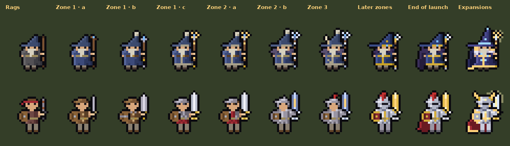
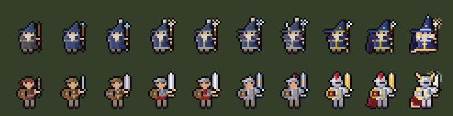

Your note: more small details in between before anything gets grand, so the ladder can stretch further. Now 10 steps: today, 7 small ones (a hat bobble, a belt, a collar, a feather; studs, a tabard, a little plume), then the two big ones saved for last. Shown 6×; swipe sideways on a phone.

First column is the game today. Zone names are rough: how many zones there are depends on the pacing talk (card on the board).

| Step | Wizard | Warrior | Weapon |
|---|---|---|---|
| Rags | Today | Today | Look 1 |
| Zone 1 · a | Blue dye | Leather cap and jerkin | Look 2 |
| Zone 1 · b | Hat bobble, leather belt | Studs, bracer, banded shield | Look 3 |
| Zone 1 · c | Cream trim, hat band | Iron cap, mail | Look 4 |
| Zone 2 · a | Small collar | Red tabard, leather shoulder | Look 4 |
| Zone 2 · b | Mantle, taller hat | Open helm, pauldrons, breastplate | Look 5 |
| Zone 3 | Feather, star stitching | Small red plume | Look 5 |
| Later zones | Hooded mantle, gold trim | Closed helm, crest, gold trim | Look 6 |
| End of launch | Cape on the back | Cape on the back | Look 6 |
| Expansions | Tall glowing hat | Winged helm, silver and gold | Look 7 |
Draft 1 (6 steps) was the first version of this page.